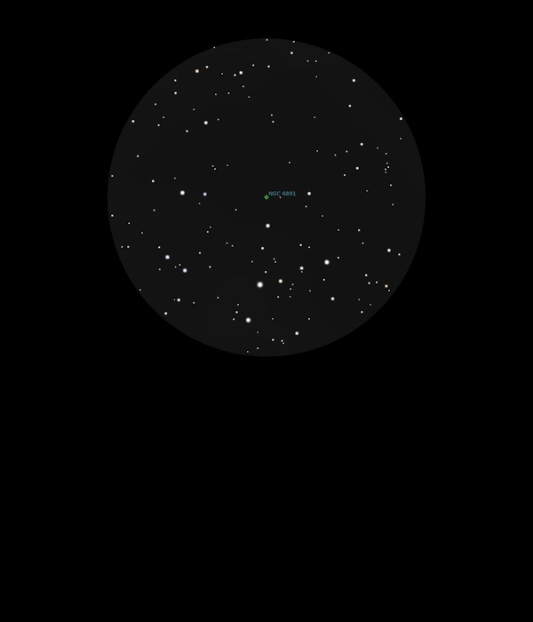

NGC 6891
Planetary Nebulae in Delphinus
NGC 6891
Mag 10.7
08/09/16
Really hunting faint objects tonight
Very small and like an out of focus star but perhaps with a
hint of blue
Using UHC filter a feel of the shape but little else, however
pleased to have located it!